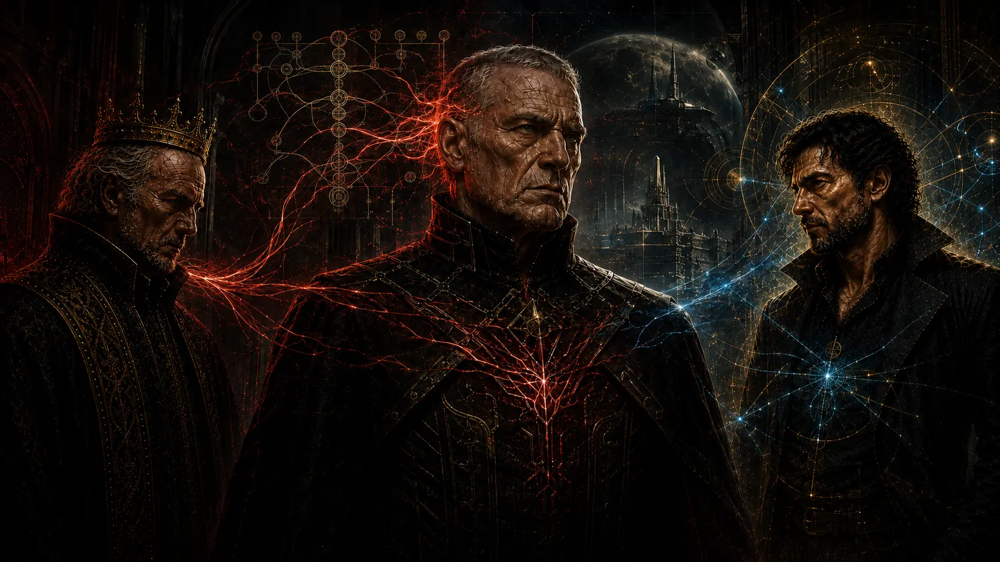

Public hierarchy
- Militarized command and territorial ambition
- Purity doctrine and enforced conformity
- Ritual belonging and historical destiny
- Centralized bloodline and succession control
- Correction treated as betrayal
Conspiracy file · moderate spoilers
One criminal system is public, militarized, territorial, and obsessed with purity. The other is private, deniable, and built from compromise. Their collision destroys the group that believed it could control both.
Two ecosystems
Shared core Both systems treat people as instruments. Neither becomes the moral answer to the other.
The fatal decision
After the Great War, Konrad should leave the process. He remains because he believes his experienced Daemon can dominate Samuel and prove that every defeat was preparation.
Samuel promises a separate autonomous group. Konrad reactivates his Daemon, followers, hierarchy, records, and breeding program inside the shared environment.
Konrad thinks he is rebuilding his empire. He is transferring its access points to Samuel.
Generational capture
He compromises records, succession, family relationships, and younger intermediaries until Konrad's inner circle depends on Samuel's information and the group's future operates through Samuel's methods.
Mixed ancestry, sexuality, gender expression, and victimhood are not corruption. The crimes are coercion, exploitation, reproductive abuse, nonconsensual humiliation, false records, and using people as leverage.

Konrad appears dominant. Samuel's influence enters from behind. Sylvan sees the structure. The image interprets the relationship; its energy paths and architecture are not literal canon.
He claims control of Sylvan and the new Luminai, revises every contradiction, and asks for the same autonomy-for-access concessions used after the war. Konrad's inner circle recognizes the pattern before Konrad, who remains isolated inside a counterfeit victory.
The outcome does not require everyone to accept one interpretation. It requires supposedly private exceptions to become a visible repeated system.
Follow the reverse chronology